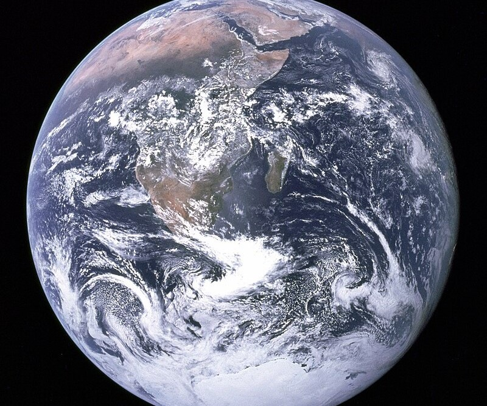
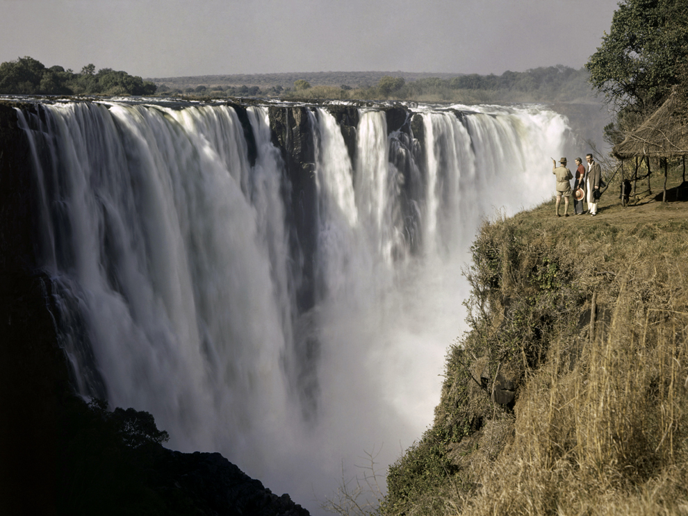

<link href="https://cdn.jsdelivr.net/npm/bootstrap@5.3.3/dist/css/bootstrap.min.css" rel="stylesheet"
    integrity="sha384-QWTKZyjpPEjISv5WaRU9OFeRpok6YctnYmDr5pNlyT2bRjXh0JMhjY6hW+ALEwIH" crossorigin="anonymous">
	<style>
        .card {
            position: relative;
            overflow: hidden;
            transition: transform 0.3s ease, box-shadow 0.3s ease;
			cursor:pointer
        }

        .card:hover {
            transform: translateY(-5px);
            box-shadow: 0 0 20px rgba(0, 0, 0, 0.1);
        }

        .card .card-body {
            position: absolute;
            bottom: 0;
            left: 0;
            width: 100%;
            padding: 1rem;
            background-color: transparent;
            transform: translateX(100%);
            transition: transform 0.3s ease;
			color: #fafafa;
            
        }
		p{
			color: #fafafa;
		}

        .card:hover .card-body {
            transform: translateY(0);
            opacity: 1;
        }
		.hover-effect{
			color: red;
			transition: all 300ms;
			position: relative;
		}
		.hover-effect:hover{
			color: Blue;
			text-shadow: 2px 2px 2px black;
		}
		.hover-effect:after{
			content: '';
			position: absolute;
			bottom: 0;
			left: 50%;
			width: 50px;
			height: 5px;
		}
		.mayu{
			color: black;
		}
		
    </style>
<section class="container">
    <div class="py-5">
        <div class="row d-flex">
            <div class="col">
                <div class="card">
                    
                    <div class="card-body">
                        <h3 class="card-title">Indonesia<h3>
                        <div class="pb-1 text-muted">
                            <p>As there are over 17,000 islands found in Indonesia, it is not surprising that a vast array of landscapes can be found.</p>
                        </div>
                        <div class="d-flex">
                            <a href="https://dev.erp.apnasite.in/" class="text-dark text-decoration-none"></a>
                        </div>
                    </div>
                </div>
            </div>
            <div class="col">
                <div class="card">
                    
                    <div class="card-body">
                        <h3 class="card-title">Earth</h3>
                        <div class="pb-1 text-muted">
                            <p>The Blue Marble is a photograph of Earth
                            </p>
                        </div>
                        <div class="d-flex">
                            <a href="https://dev.erp.apnasite.in/" class="text-dark text-decoration-none"></a>
                        </div>
                    </div>
                </div>
            </div>
            <div class="col">
                <div class="card">
                    
                    <div class="card-body">
                        <h3 class="card-title">Water on the Earth</h3>
                        <div class="pb-1 text-muted">
                            <p>Water is a chemical substance that is composed of hydrogen and oxygen (H2O) and is vital for all known forms of life.</p>
                        </div>
                        <div class="d-flex">
                            <a href="https://dev.erp.apnasite.in/" class="text-dark text-decoration-none"></a>
                        </div>
                    </div>
                </div>
            </div>
        </div>

        <h2 class="mb-3 text-center hover-effect">Nature</h2>
        <h3>Indonesia.</h3>
        <div class="mb-4 text-center">
            <p class="mayu">As there are over 17,000 islands found in Indonesia, it is not surprising that a vast array of landscapes can be found.
			Islands such as Sumatra, Kalimantan and Papua are considerably wetter than other islands and therefore offer ancient
			rainforests that cover much of the islands' areas.Indonesia, country located off the coast of mainland Southeast Asia in
			the Indian and Pacific oceans.The major Indonesian islands are characterized by densely forested volcanic mountains in 
			the interior that slope downward to coastal plains covered by thick alluvial swamps that, in turn, dissolve into shallow
			seas and coral reefs. </p>
        </div>

    </div>
</section>